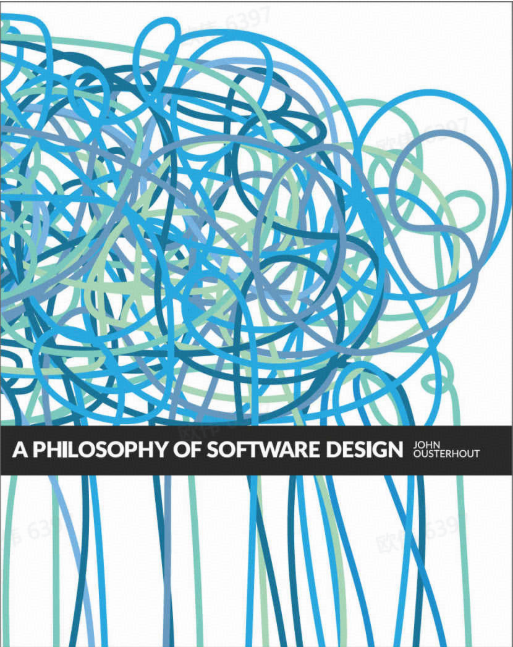
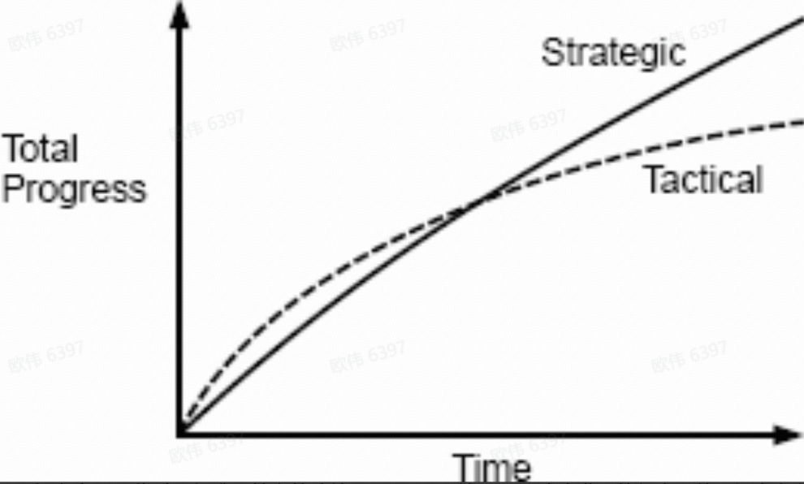

如果你因为害怕破坏某件事而不敢做出改变，那么它已经坏了。

前言
最近读了John Ousterhout的《软件设计哲学》，虽然这本书名字很高大上称为哲学，其实内容倒是简单易懂，整本书也就一百来页，读起来很快，每章都简短的阐述了思想，厕纸最佳读物👍。
本书主要围绕如何降低软件复杂度展开，说是哲学也不为过，因为软件设计的目标也确实是对抗复杂度，书中主要围绕两个方法来降低复杂度：
- 第一种方法是通过使代码更简单和更清晰来消除复杂性。例如，可以通过消除特殊情况或以一致的方式使用标识符来降低复杂性。
- 第二种方法是封装，以便程序员可以在系统上工作而不会立即暴露其所有复杂性**。这种方法称为模块化设计。在模块化设计中，软件系统分为模块，例如面向对象语言的类。这些模块被设计为彼此相对独立，以便程序员可以在一个模块上工作而不必了解其他模块的细节。
由于软件具有很好的延展性，因此软件设计是一个贯穿软件系统整个生命周期的连续过程。这使得软件设计与诸如建筑物，船舶或桥梁的物理系统的设计不同。 但是，并非总是以这种方式查看软件设计。在编程的大部分历史中，设计都集中在项目的开始，就像其他工程学科一样。这种方法的极端称为瀑布模型，该模型将项目划分为离散的阶段，例如需求定义，设计，编码，测试和维护。 在瀑布模型中，每个阶段都在下一阶段开始之前完成；在许多情况下，每个阶段都由不同的人负责。在设计阶段，立即设计整个系统。 不过，瀑布模型却很少适用于软件。软件系统本质上比物理系统复杂。在构建任何东西之前，不可能充分可视化大型软件系统的设计，以了解其所有含义。结果，初始设计将有许多问题。在实施良好之前，问题不会变得明显。但是，瀑布模型的结构此时无法适应主要的设计更改（例如，设计师可能已转移到其他项目）。因此，开发人员尝试在不改变整体设计的情况下解决问题。这导致复杂性的爆炸式增长。
复杂度是软件设计老生常谈的问题，类似的讨论有很多很多，所以书中不少观点都似曾相识，如果看过类似的书，能带来的新东西可能并不多，但有很多与其他书中不同的观点很有意思，并且很多观点都能与我产生共鸣！看到有跟自己观点相似的书，还是很感慨的。
个人读下来前半部分内容对我比较有新意，后半部分相对来说比较平淡，大家可以选择性的读文章的内容，挑感兴趣的看看，本文主要摘要和整合一些个人认为比较有意思的观点，同时附上个人的一些见解。
软件的复杂性
复杂性的三种表现形式：
- 变更放大：看似简单的变更需要在许多不同地方进行代码修改。也意味着很难修改某个东西。
- 认知负荷：复杂性的第二个症状是认知负荷，这是指开发人员需要多少知识才能完成一项任务。较高的认知负担意味着开发人员必须花更多的时间来学习所需的信息，并且由于错过了重要的东西而导致错误的风险也更大。
- 未知的未知: 必须修改哪些代码才能完成任务，或者开发人员必须获得哪些信息才能成功地执行任务，这些都是不明显的。
复杂性的原因：
- 依赖性：当无法单独理解和修改给定的一段代码时，便存在依赖关系。依赖关系是软件的基本组成部分，不能完全消除。实际上，我们在软件设计过程中有意引入了依赖性。每次编写新类时，都会围绕该类的 API 创建依赖关系。但是，软件设计的目标之一是减少依赖关系的数量，并使依赖关系保持尽可能简单和明显。
- 模糊性：当重要的信息不明显时，就会产生模糊性。在许多情况下，模糊性来源于文档的不足。第 13 章讨论了这个主题。但是，模糊性也是设计问题。如果系统设计简洁明了，则所需的文档将更少。对大量文档的需求通常是表明设计不正确的危险信号。减少模糊性的最佳方法是简化系统设计。
相信大家看完三个表现，就会把自己以前做过的项目对号入座，这不就是我们的现状吗👻（点名营销表达），复杂度的本质大家或许或多或少都有些自己的见解，那么该如何降低复杂度呢，这些才是文章的重头戏。
战略与战术编程
战术编程：战术编程主要重点是使某些功能正常工作，例如新功能或错误修复。战术编程的问题是它是短视的，因为对未来做计划不是优先事项。你不会花费太多时间来寻找最佳设计，只想尽快使某件事起作用，这个想法往往就是堆砌屎山的根源。 **战略编程：**战略编程将花费更多时间来改进系统的设计，而不是采取最快的方式来完成当前的项目。

万能的图，如果大家读过相关的架构设计或复杂度的书，都会经常看到这个曲线。 随着时间的积累，在初期只考虑完成功能，不考虑整个系统的复杂度设计来看，效率一定比战略编程来的高，但是随着时间的流逝，复杂度不断积累，总有一个节点会使系统难以维护，使得战术编程的效率大大降低。
理想很丰满，现实很骨感，我相信大部分的程序员都是有理想，想把架构设计好，因为把架构设计好的工作往往比只完成任务的工作，更有乐趣。但是由于很多因素，战略编程往往很难实施（例如，截止时间，创业&资金问题等等）。 作者文中也承认战略编程实施存在的困难，但还是坚持认为应该使用战略编程而不是战术编程。（其中举了facebook和google的例子）
但是我不认同在任何时间都进行战略编程。影响因素有很多，例如这个功能或项目不一定有收益，需要快速上线验证收益，又或是创业公司需要快速的推出产品，与竞品竞争等等，公司的首要目的是活下去，完成比完美可能更加重要，此时与时间赛跑还是很重要的，等到真的产生收益之后，先生存下去了，才能再来考虑软件设计的复杂性，但是同样的矛盾便产生了，此时又很难再转向战略编程。“一旦开始延迟设计改进，就很容易使延迟永久化”，产品有收益就会不断有新的迭代，往往没有办法松口气去重构，需求只会越来越急，接下来就变成招人，堆人来应对软件的复杂性，这种情况不在少数。
那么怎么办呢，我认为好的架构师，会从两种方式中找到一个平衡点，既可以快速完成功能，又可以保证在成功后，系统也办法维护或是重构，而不是一直将复杂度堆积下去，例如对部分决策做延迟决定，以及保留20%或更多的时间来做架构的重构。
书中还提到了一个例子，也很有感触，战术龙卷风。战术龙卷风是一位多产的程序员，他抽出代码的速度比其他人快得多，但完全以战术方式工作。实施快速功能时，没有人能比战术龙卷风更快地完成任务。在某些组织中，管理层将战术龙卷风视为英雄。但是，战术龙卷风留下了毁灭的痕迹。他们很少被将来必须使用其代码的工程师视为英雄。通常，其他工程师必须清理战术龙卷风留下的混乱局面，这使得那些工程师（他们是真正的英雄）的进步似乎比战术龙卷风慢。
抽象
**抽象是软件设计的关键概念之一。**它是一种将复杂的系统分解为更小，更可管理的部分的方法。抽象的目的是为了提高系统的可维护性和可理解性。
模块应该是深的
**深模块：**深模块允许通过简单的接口访问许多功能。深层模块提供了强大的抽象，因为它们易于使用，但隐藏了巨大的实现复杂性。 **浅模块：**浅层模块是其接口与其提供的功能相比相对复杂的模块。例如，实现链表的类很浅。操作链表不需要太多代码（插入或删除元素仅需几行），因此链表抽象不会隐藏很多细节。链表接口的复杂度几乎与其实现的复杂度一样高。浅类有时是不可避免的，但是它们在管理复杂性方面没有提供太多帮助。
模块的接口代表了模块强加给系统其余部分的复杂性：接口越小越简单，引入的复杂性就越小。最好的模块是那些收益最大，成本最低的模块。接口不错，但更多或更大的接口不一定更好！
作者认为模块应该是深的，不幸的是，深度类的价值在今天并未得到广泛认可。编程中的传统观点是，类应该小而不是深。经常告诉学生，类设计中最重要的事情是将较大的类分成较小的类。对于方法，通常会给出相同的建议：“任何长于 N 行的方法都应分为多种方法”（N 可以低至 10）。这种方法导致了大量的浅类和方法，这增加了整体系统的复杂性。
“类应该小”的极端做法是我称之为“类炎”的综合症，这是由于错误地认为“类是好的，所以类越多越好”。在遭受类炎的系统中，鼓励开发人员最小化每个新类的功能：如果您想要更多的功能，请引入更多的类。分类炎可能导致个别地简单的分类，但是却增加了整个系统的复杂性。小类不会贡献太多功能，因此必须有很多小类，每个小类都有自己的接口。这些接口的累积会在系统级别产生巨大的复杂性。小类也导致冗长的编程风格，这是由于每个类都需要样板。
我比较赞同这个观点，封装的越深，对外提供的功能越丰富，隐藏的细节就越多，对使用方来说更简单，但是需要注意信任的问题，你是否愿意相信代码中底层的实现符合你的预期呢。（主要是业务部分，屎山太多让人无法去信任代码）
信息隐藏和泄漏
信息隐藏 这部分其实和上部分应该连起来看，实现深层模块最重要的技术是信息隐藏。 信息隐藏在两个方面降低了复杂性。
- 它**将接口简化为模块。**接口反映了模块功能的更简单、更抽象的视图，并隐藏了细节;这减少了使用该模块的开发人员的认知负担。
- **信息隐藏使系统更容易演化。**如果隐藏了一段信息，那么在包含该信息的模块之外就不存在对该信息的依赖，因此与该信息相关的设计更改将只影响一个模块。
例如，如果 TCP 协议发生了变化（例如，为了引入一种新的拥塞控制机制），协议的实现就必须进行修改，但是在使用 TCP 发送和接收数据的高级代码中不需要进行任何修改。（依赖抽象而不是具体实现）
信息泄漏 信息隐藏的反面是信息泄漏。当一个设计决策反映在多个模块中时，就会发生信息泄漏。 信息泄漏是软件设计中最重要的危险信号之一。 但是要注意别做过头，仅当在其模块外部不需要隐藏信息时，隐藏信息才有意义。如果模块外部需要该信息，则不得隐藏它。
降低复杂度
创建更深层类的另一种思考方式。
假设您正在开发一个新模块，并且发现了一个不可避免的复杂性。哪个更好：应该让模块用户处理复杂性，还是应该在模块内部处理复杂性？
如果复杂度与模块提供的功能有关，则第二个答案通常是正确的答案。大多数模块拥有的用户多于开发人员，因此开发人员遭受的苦难要大于用户。作为模块开发人员，您应该努力使模块用户的生活尽可能轻松，即使这对您来说意味着额外的工作。表达此想法的另一种方法是，模块具有简单的接口比简单的实现更为重要。
作为开发人员，很容易以相反的方式行事：解决简单的问题，然后将困难的问题推给其他人。如果出现不确定如何处理的条件，最简单的方法是引发异常并让调用方处理它。如果不确定要实施什么策略，则可以定义一些配置参数来控制该策略，然后由系统管理员自行确定最佳策略。
这样的方法短期内会使您的生活更轻松，但它们会加剧复杂性，因此许多人必须处理一个问题，而不仅仅是一个人
例如，如果一个类抛出异常，则该类的每个调用者都必须处理该异常。如果一个类导出配置参数，则每个安装中的每个系统管理员都必须学习如何设置它们。
在开发模块时，承担更多实现工作，以减轻用户的痛苦。
降低复杂性时要谨慎处理；这个想法很容易被夸大。一种极端的方法是将整个应用程序的所有功能归为一个类，这显然没有意义。如果（a）被降低的复杂度与该类的现有功能密切相关，（b）降低复杂度将导致应用程序中其他地方的许多简化，则降低复杂度最有意义。简化了类的界面。请记住，目标是最大程度地降低整体系统复杂性。
在一起更好还是分开更好
软件设计中最基本的问题之一是：给定两个功能，它们应该在同一个地方一起实现，还是应该分开实现？ 在决定是组合还是分开时，目标是降低整个系统的复杂性并改善其模块化。细分的行为会带来额外的复杂性，而这在细分之前是不存在的：
- 一部分复杂性就来自组件的数量：组件越多，就越难以追踪所有组件，也就越难在大的组件集合中找到所需的组件。细分通常会导致更多接口，而每个新接口都会增加复杂性。
- 细分可能会导致需要附加的代码来管理组件。例如，在细分之前使用单个对象的一段代码现在可能必须管理多个对象。
- 细分会产生分离：细分后的组件将比细分前的组件距离更远。
如果代码段紧密相关，则将它们组合在一起是最有益的。如果代码段互相无关，则最好分开。以下是判断两个代码段是否相关的一些信号：
- 它们共享信息；例如，这两段代码都可能依赖于一个特定类型文档的语法。
- 它们总是一起被使用：任何使用其中一段代码的人都可能同时使用另一段代码。这种关系形式仅在其是双向关系时才值得注意。作为反例，磁盘块的高速缓存几乎总是会涉及到哈希表，但是哈希表可以在许多不涉及磁盘块高速缓存的情况下被使用。因此，这些模块应该分开。
- 它们在概念上重叠，因为存在一个更高层级的简单类别可以涵盖这两段代码。例如，搜索子字符串和大小写转换都属于字符串操作的范畴，而流量控制和可靠的信息传递都属于网络通信的范畴。
- 不看其中的一段代码就很难理解另一段。
作者对《整洁代码之道》中“函数应该非常短，甚至 10 行都太长了” 进行了反驳说到： 我同意短的函数一般来说比长的函数更容易理解。然而，一旦函数的代码行数少到几十行，进一步的减少行数不太可能对可读性产生太大的影响。更重要的是，函数的分解是否降低了系统的整体复杂性？换句话说，阅读几个短函数并理解它们是如何协同工作的比阅读一个较大的函数更容易吗？更多的函数意味着更多的接口需要文档化和学习。如果函数太小了，它们就失去了独立性，导致必须一起阅读和理解的连体函数。当这种情况发生时，最好还是保留较大的函数，以便所有相关的代码都在一个地方。深度比长度更重要：首先使函数变深，然后尝试使它们足够短，以便易于阅读。不要为了长度而牺牲深度。
关于这一点我是非常认同的，大量的小函数会使代码的可读性降低，特别对于一些水平不够的程序员来说，为了实践这个理论，强行去拆方法，导致函数嵌套过深，复杂度直线上升。个人认为短函数存在意义根据其复用性来看，如果他只是某个函数的一段特定功能，没必要给他单独拆一个函数，在函数内分好模块即可，例如换行表示这段逻辑的结束。
设计两次
设计软件非常困难，因此您对如何构造模块或系统的初步思考不太可能会产生最佳的设计。如果为每个主要设计决策考虑多个选项，最终将获得更好的结果：设计两次。（三次四次也是同理）
你无法对一个设计感到满意时，不妨多考虑几种方案，在你粗略地设计出可供选择的方案后，列出每个方案的优缺点，进行比较，如果每个方案都无法满足你，可能这些方案都不是最佳选择，在比较的过程中，你可能会知道你想要的是什么，从而设计出更好的方案。 但是要注意，保留抉择设计方案的过程，这很有用，可以在别人遇到类似的问题时，作为考虑当初为什么不选择A方案，而是B方案。
一致性
一致性可以应用于系统中的许多层级，这里是一些例子。
- **名称。**例如变量名。这点我真的是深有感悟，希望大家都写好名称吧，不一致的名称会使复杂度严重提高，并且留坑，例如有人叫bestxxx，结果实际并不是best的。
- 编码风格。 如今，开发组织通常会制定编码风格指南，在编译器所强制执行的规则之外对程序进行额外的结构限制。现代的风格指南解决了一系列问题，例如缩进、花括号放置、声明顺序、命名、注释以及对认为危险的语言特性的限制。风格指南使代码更易于阅读，并且可以减少某些类型的错误。
- 接口。 具有多种实现的接口是一致性的另一个示例。一旦了解了接口的其中一种实现，其他的实现都将变得更易于理解，因为您已经知道它将会提供的特性。
- 设计模式**。** 设计模式是某些常见问题的普遍接受的解决方案，例如用于用户界面设计的模型-视图-控制器（MVC）方法。如果您可以使用现有的设计模式来解决问题，则实现会更快地进行，也更有可能奏效，并且您的代码对读者来说也会可读性更好。
- 不变量。 不变量是参数值或结构的属性，它总是不变的。例如，存储文本行的数据结构可能会强制要求每行始终以换行符终止。不变量减少了代码中必须考虑的特殊情况，并且更容易推断代码的行为。
建立和保持一致性的一些技巧：
- **文档。**各种规范文档，例如编码风格指南等。
- **强制执行。**强制执行包括，代码检查，静态分析工具，以及代码评审等等。
- 入乡随俗。 所有约定中最重要的约定是每个开发人员都应遵循古老的格言：“到了罗马，就按罗马人那样做。
- 不要改变现有约定。 抵制“改善”现有约定的冲动。有一个“更好的想法”并不是引入不一致的充分借口。您的新想法可能确实更好，但是一致性胜过不一致的价值几乎总是大于一种方法胜过另一种方法的价值。
说到底就是两个字，规范。但是，规范是最脆弱的东西，例如阿里的Java开发手册，他们自己都没按手册规范来，更别说来约束别人。要知道一切的约定都是脆弱的，如果你有项目规范，那么请开发****脚手架，如果有代码风格规范，那么请开发对应的静态检查。
注释
本书花了挺大篇幅讲了注释，注释是降低复杂度，最简单的办法之一，但是要注意：注释不是你写复杂代码的理由。
当开发人员不写注释时，他们通常会以以下一种或多种借口为自己的行为辩护：
- “好的代码是自解释的。” – 《代码整洁之道》的观点类似，我个人也是反对的。
- “我没有时间写注释。”
- “注释很容易过时，并会产生误导。”
- “我所看到的注释都是毫无价值的，何必呢？”
如何解决这些问题：
- 确保注释更新的最佳方法是将注释放置在它们所描述的代码附近
- 不要重复代码，同样不要重复注释，如果信息已经在程序之外的某个地方记录了，不要在程序内部重复记录，只需引用外部文档。
- 确保注释更新的第二种技术是避免重复。
- 注释应该描述代码中难以理解的内容。
- 更低层级的注释可提高精确度，注释通过提供不同详细程度的信息来增强代码。
- 实现注释：做什么以及为什么这么做，而不是如何做。实现注释的主要目的是帮助读者理解代码在做什么（而不是代码如何工作）。一旦读者知道了代码要做什么，通常就很容易理解代码的工作原理。
编写注释后，请问自己以下问题：从未看过代码的人能否仅通过查看注释旁边的代码来写出这样的注释？如果答案是肯定的（如上述示例所示），则注释不会使代码更易于理解。像这样的注释是为什么有些人认为注释毫无价值的原因。
作者认为好的文档可以帮助解决后复杂度的后两个问题。认知负荷和未知的未知；好的文档可以阐明依赖关系，并且可以填补空白以消除模糊性。 毕竟有完善的文档确实就没这两个问题，但是我觉得问题还是没有完成消失，只是减轻了，好的文档也不能解决坏的设计。
但是我认为注释是个很尴尬的点，你无法去完成信任他人的注释。只有精英团队才能这样合作。
性能设计
关于这点就单纯说说自己的一些看法吧，都大差不差。 大部分作者都认为，先做好软件设计降低复杂度，再考虑性能问题，你说DDD他性能好吗，不好，甚至很多时候为了降低复杂度，牺牲了很多性能，例如eventbus，聚合根等等。 只能说鱼和熊掌不可兼得，只能权衡。如果你的场景偏向性能，那么优先以性能为优去设计即可，但如果不是，那么就先做好复杂度的设计，再考虑性能，有时候就是需要一些取舍。例如游戏场景，为了更好的利用CPU缓存，会将数据尽可能的拼凑在一起，大部分也是面向过程编程，但是游戏发布后，基本就很少迭代了，后续的维护复杂度也可以接受了。
代码应该是易理解的
软件应被设计成易于阅读的而不是易于编写的。
这点我表示非常赞同，在这也是我工作中或者说协作项目中更喜欢使用Go的原因之一，Go写出来的代码更易阅读，代码风格再差也差不到哪去，并且就算是依赖包有问题，也比较容易排查。相反如果是python或者php大型项目维护起来，那真是一坨，Python一时爽维护火葬场（真实经历，代码在哪实现都找不到，一堆动态注入）。
当然如果我个人项目我会偏向于使用Python，Js等一把梭，写得就是爽，主打一个快速迭代。
决定什么是重要的
区分什么是重要的和什么是不重要的。围绕重要的事情设计软件系统。对于不重要的事情，尽量减少它们对系统其余部分的影响。重要的事情应该得到强调以使其更明显，不重要的事情应该尽可能隐藏起来。
关注重要事情的想法也适用于软件设计之外的其它领域。在技术写作中，使文档易于阅读的最佳方法是先确定几个关键概念，并围绕它们组织文档的其余部分。讨论系统的细节时，将它们与总体概念联系起来也会有所帮助。 关注重要事情也是一种伟大的生活哲学：确定对你最重要的事情，尽可能将你的精力花在这些事情上。不要把时间浪费在您认为不重要或无益的事情上。
“好的品味”这个词描述的是能够区分什么是重要的和什么是不重要的能力。拥有良好的品味是成为一名优秀软件设计师的重要部分。
总结
成为一名优秀设计师的回报是，您可以将大部分时间花在设计阶段，这很有趣。而糟糕的设计师花费大量时间在复杂而脆弱的代码中寻找缺陷。如果您提高了设计技能，不仅可以更快地生产出更高质量的软件，而且软件开发过程也将也会更加愉快。
最后的最后，再说说自己最近的一些想法。
软件设计没有银弹！！！ 我们还需要努力。 你可能无法保证其他人的代码，但是你可以做好自己，保证自己的代码优雅，即使现在你的项目可能会因为其他人的修改导致复杂度仍然很高，但你可以锻炼你的能力，总有一天会有团队需要你的这项能力。
在AIGC时代，AI未来是否能成为软件设计的银弹，我觉得路还很长，只有当人类不需要CR代码，不需要写代码的时代到来，那么软件设计才不存在复杂度可言。
书签
设计原则小结
- 复杂性是增量产生的：您必须努力处理小事情（请参阅 第 2.4 节）。
- 能工作的代码是不够的（请参阅 第 3.2 节）。
- 持续进行小额投资以改善系统设计（请参阅 第 3.3 节）。
- 模块应该是深的（请参阅 第 4.4 节）
- 接口的设计应尽可能简化其最常见的用法（请参阅 第 4.7 节）。
- 让模块的接口简单比让其实现简单更为重要（请参阅 第 8 章 和 第 9.7 节）。
- 通用模块是更深的（请参阅 第 6 章）。
- 分开通用代码和专用代码（请参阅 第 6.6 节 和 第 9.4 节）。
- 不同的层级应具有不同的抽象（请参阅 第 7 章）。
- 下沉复杂性（请参阅 第 8 章）。
- 通过定义来规避错误（请参阅 第 10.3 节）。
- 设计两次（请参阅 第 11 章）。
- 注释应该描述代码中难以理解的内容（请参阅 第 13 章）。
- 软件应被设计成易于阅读而不是易于编写（请参阅 第 18.2 节）。
- 软件开发的增量应该是抽象而不是功能（请参阅 第 19.2 节）。
- 区分重要的和不重要的事情，并强调重要的事情（请参阅 第 21 章）。
危险信号小结
这些是本书中讨论的一些最重要的危险信号。系统中任何这些症状的存在都表明系统的设计存在问题：
- 浅模块：类或方法的接口并不比其实现简单得多（请参阅 第 4.5 节 和 第 13.5 节）。
- 信息泄露：设计决策反映在多个模块中（请参阅 第 5.2 节）。
- 时间分解：代码结构基于执行操作的顺序，而不是基于信息隐藏的原则（请参阅 第 5.3 节）。
- 过度暴露：API 强迫调用者在使用常用功能的时候还需要去了解那些很少使用的功能（请参阅 第 5.7 节）。
- 透传方法：一种几乎不执行任何操作的方法，只是将其参数传递给具有相似签名的另一个方法（请参阅 第 7.1 节）。
- 重复：一遍又一遍的重复代码（请参阅 第 9.4 节）。
- 通用专用混合体：专用代码与通用代码没有整洁地分开（请参阅 第 9.5 节）。
- 连体方法：两个方法之间的依赖很多，以至于很难在不理解一个方法的实现的情况下理解另一个方法的实现（请参阅 第 9.8 节）。
- 注释重复了代码：注释中的所有信息在旁边的代码里显而易见（请参阅 第 13.2 节）。
- 实现文档污染了接口：接口注释描述了其用户不需要了解的实现细节（请参阅 第 13.5 节）。
- 模糊的名称：变量或方法的名称过于不精确，以至于它不能传递太多有用的信息（请参阅 第 14.3 节）。
- 难以选取名称：很难为实体提供一个精确而直观的名称（请参阅 第 14.3 节）。
- 难以描述：为了得到完整的描述，变量或方法的文档必须很长（请参阅 第 15.3 节）。
- 难以理解的代码：一段代码的行为或含义不容易被理解（请参阅 第 18.2 节）。